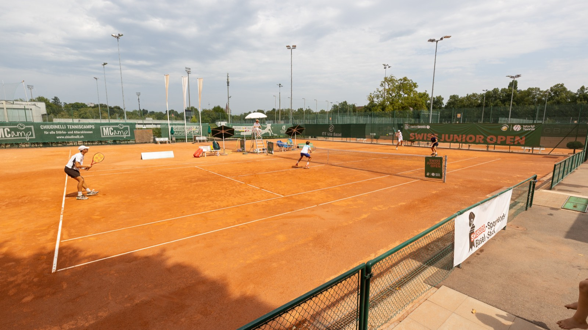

TC Old Boys Basel.

Gespielt wird auf der Anlage des TC Old Boys am St. Galler-Ring, wenige Minuten vom Stadtzentrum entfernt.
TC Old Boys Basel
St. Galler-Ring 225
4054 Basel, Schweiz
Verbindung Hotel–Anlage: Tram Linie 8 (Basler Verkehrs-Betriebe). Club: tcob.ch